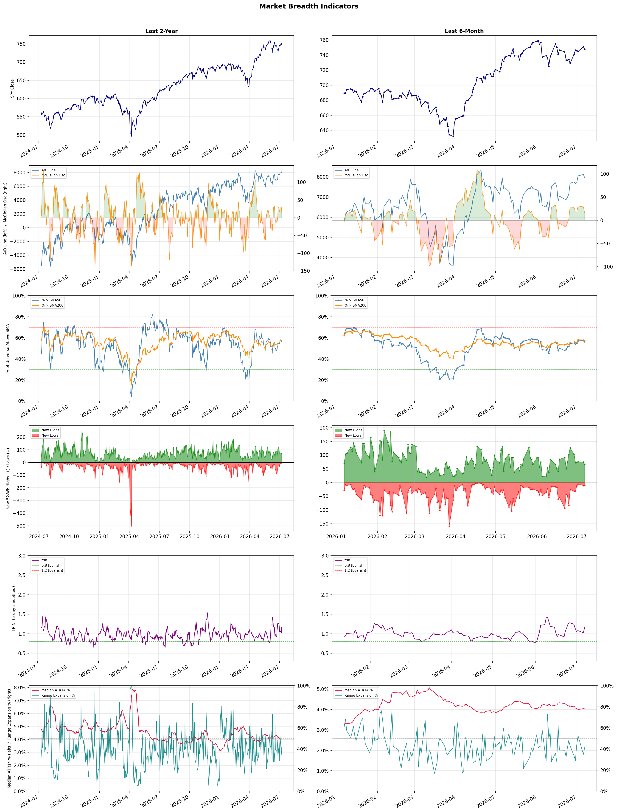

A daily market breadth and sector rotation report for active investors
| Item | Read |
|---|---|
| Regime | Selective Risk-On |
| Risk posture | Selective |
| Universe | 1,347 stocks tracked · 66 new 52-week highs · 30 active swing setups |
| Breadth | 56.3% of tracked stocks are above SMA50 — neutral range, new highs exceed new lows (66 vs 10) |
| Leadership | Healthcare Plans, Biotechnology, and Airlines |
| Weakest groups | Uranium, Copper, and Other Industrial Metals & Mining |
Use this report to prioritize research and chart review; validate entries, stops, liquidity, earnings, and risk before acting.
| Item | Read |
|---|---|
| Primary read | Selective Risk-On regime with Selective risk posture. |
| Research queue | CLOV, OSCR, HUM, PGNY, ALHC |
| Leadership focus | Healthcare Plans, Biotechnology, and Airlines |
| Caution list | Uranium, Copper, and Other Industrial Metals & Mining |
| Review prompt | Check extension risk, chart location, fundamentals, valuation, and earnings before using any research row. |
| Item | Read |
|---|---|
| Primary read | 1 active risk warnings; use screen output as watchlist input only. |
| Bullish screens | BEAM, ELVN, EWTX, HNGE, TDOC |
| Bearish screens | OLLI, ABR, SMR, MRLN |
| Alerts / levels | Automated trigger, stop, ATR, liquidity, reward/risk, and event-risk levels are pending future enrichment. |
| Review prompt | Open the linked chart, define trigger and invalidation, then check liquidity and event risk independently. |
Risk Posture: Selective — screen backdrop supports selective research in leading industries
Metric context: McClellan below -50 = elevated selling pressure; below -100 = washout territory. Range Expansion = share of stocks with daily range above their 20-day average. Signal Density = share of tracked names appearing in signal screens.
| Breadth Date | % > SMA50 | % > SMA200 | New Highs | New Lows | McClellan | Median Range | Avg Range | Median ATR14 | Range Expansion | Signal Density |
|---|---|---|---|---|---|---|---|---|---|---|
| 2026-07-07 | 56.3% | 57.4% | 66 | 10 | 15.7 | 3.5% | 4.2% | 4.0% | 41.4% | 3.4% |

Prior comparison date: July 6, 2026
| Metric | Prior | Current | Change |
|---|---|---|---|
| Regime | Selective Risk-On | Selective Risk-On | unchanged |
| Risk Posture | Selective | Selective | unchanged |
| % > SMA50 | 57.3% | 56.3% | -1.1 pts |
| % > SMA200 | 57.9% | 57.4% | -0.5 pts |
| New Highs | 75 | 66 | -9 |
| New Lows | 11 | 10 | +1 |
Top-10 industries entering: none. Top-10 industries leaving: none. New multi-signal long setups: BCRX, BEAM, BNY, CTVA, ELVN, EWTX, FITB, HNGE, JPM. New multi-signal short setups: ABR.
| Status | Tickers | Read |
|---|---|---|
| Added | ABR, BCRX, BEAM, BNY, CTVA, ELVN, EWTX, FITB | New technical screen matches vs prior report. |
| Removed | AGNC, ARWR, BAC, BBVA, BCS, BEN, CPRX, EW | No longer present in today's technical screen matches. |
| Still Active | ALKS, EQR, MET, SGHC, TROW, YUM | Appeared in both current and prior reports. |
| Promoted | none | Model Screen Score improved by at least 15 points. |
| Downgraded | none | Model Screen Score declined by at least 15 points. |
| Direction | Industry | ETF | Prior Rank | Current Rank | Days | Rank Change |
|---|---|---|---|---|---|---|
| Rose | Household & Personal Products | XLP | 95 | 11 | 35 | +84 |
| Rose | Insurance Brokers | N/A | 89 | 15 | 42 | +74 |
| Rose | Insurance - Property & Casualty | KIE | 79 | 5 | 35 | +74 |
| Rose | Medical Instruments & Supplies | N/A | 85 | 22 | 42 | +63 |
| Rose | Building Products & Equipment | XHB | 90 | 27 | 42 | +63 |
Bull: The Household & Personal Products sector is likely rising in relative strength due to its resilience amid broader market caution, as evidenced by mixed consumer stock performance and the focus on stable, dividend-paying companies highlighted in recent headlines. The mention of a "Dividend King" stock poised to outperform suggests that investors are seeking reliable income streams in uncertain times, further bolstering the attractiveness of household products companies like Procter & Gamble, which have demonstrated consistent performance and strong fundamentals even as other sectors face challenges. Additionally, the positive outlook for packaging stocks indicates that the supply chain and production aspects of household products are well-positioned to navigate industry challenges, enhancing investor confidence in this sector.
Bear: While the Household & Personal Products sector may appear resilient, the rising relative strength could be misleading, as it often reflects a flight to safety rather than genuine growth potential. The mixed performance of consumer stocks suggests underlying weakness, and reliance on dividend-paying companies can mask fundamental issues, such as stagnant revenue growth and increasing input costs. Additionally, the positive sentiment around packaging stocks may not translate to household products, as supply chain disruptions and inflationary pressures continue to challenge margins, potentially leading to reduced profitability for companies in this sector.
Verdict: The Household & Personal Products sector is likely experiencing a rise due to its defensive nature, attracting investors seeking stability and reliable dividends amid broader market uncertainties. However, the key risk lies in the potential for stagnant revenue growth and rising input costs, which could undermine profitability and reveal underlying weaknesses in the sector's fundamentals. Investors should monitor these economic pressures closely to assess the sustainability of this upward trend.
Sources: Yahoo Finance, Google News
Bull: The Insurance Brokers industry is experiencing a rising relative strength primarily due to strong demand for brokerage services and strategic mergers and acquisitions (M&A) that are enhancing growth prospects, as highlighted in the Yahoo Finance article. Despite recent selloffs driven by fears of AI disruption, analysts are suggesting that these concerns are overblown, indicating that the fundamentals of the industry remain robust, particularly following positive Q1 earnings results from key players like Brown & Brown (StockStory). This combination of solid earnings and favorable M&A activity positions the sector for continued strength, even amidst technological uncertainties.
Bear: While the bull thesis highlights strong demand and M&A activity, it underestimates the potential long-term disruption posed by AI technologies, as evidenced by the recent selloff in insurance broker stocks. The approval of AI applications in the insurance sector could significantly reduce the need for traditional brokerage services, leading to a structural shift in the industry that may not be fully reflected in current earnings or growth projections. Furthermore, the reliance on M&A for growth can mask underlying weaknesses, and if the anticipated synergies fail to materialize, the sector could face significant challenges ahead.
Verdict: The Insurance Brokers industry is experiencing rising strength due to robust demand for brokerage services and strategic M&A activity that enhance growth prospects, as evidenced by strong Q1 earnings from major players. However, a key risk remains the potential long-term disruption from AI technologies, which could fundamentally alter the need for traditional brokerage services and impact future earnings if the anticipated benefits of M&A fail to materialize. Investors should closely monitor advancements in AI applications within the sector and their implications for traditional brokerage models.
Sources: Google News
Bull: The Insurance - Property & Casualty sector is experiencing rising relative strength due to a combination of digitalization trends and increasing exposure growth, as highlighted in the Yahoo Finance article on top P&C insurers to buy. Additionally, the positive sentiment reflected in recent headlines, such as the mention of the State Street SPDR S&P Insurance ETF (KIE) being a strong investment option, indicates growing investor confidence in the sector's resilience and potential for profitability despite facing margin pressures. This bullish outlook is further supported by Q1 highlights from key players like MGIC Investment, showcasing the sector's ability to adapt and thrive in a changing economic landscape.
Bear: While the insurance sector may be experiencing rising relative strength, this could be misleading given the underlying margin pressures highlighted by Evercore. Digitalization and exposure growth do not guarantee profitability, especially as competition intensifies and claims costs rise due to inflation and climate-related events. Additionally, the overall economic uncertainty may dampen consumer demand for insurance products, making the bullish sentiment potentially overoptimistic.
Verdict: The Property & Casualty insurance sector's rising relative strength is primarily driven by digitalization initiatives and increased exposure growth, which enhance operational efficiency and market reach. However, key risks include persistent margin pressures from rising claims costs due to inflation and climate-related events, alongside potential declines in consumer demand amid economic uncertainty. Investors should remain cautious and consider these risks when evaluating the sector's bullish outlook.
Sources: Yahoo Finance, Google News
Bull: The Medical Instruments & Supplies sector is experiencing rising relative strength due to ongoing innovation and robust performance among key players, as highlighted in recent headlines. Companies like CooperCompanies and ICU Medical are demonstrating strong earnings and operational success, indicating a solid demand for medical technologies. Additionally, the resetting of valuations in the sector, as noted by AllianceBernstein, suggests that investors are recognizing the long-term growth potential of these companies, further driving interest and investment in the industry.
Bear: While the rising relative strength and recent performance of key players in the Medical Instruments & Supplies sector may seem promising, it is essential to consider the broader economic environment and potential headwinds. Factors such as increasing regulatory scrutiny, potential supply chain disruptions, and rising costs associated with innovation could dampen profitability and growth prospects. Additionally, the resetting of valuations might reflect a market correction rather than a genuine long-term growth potential, suggesting that investors should approach this sector with caution.
Verdict: The Medical Instruments & Supplies sector is likely experiencing rising relative strength due to strong earnings and innovation from key players like CooperCompanies and ICU Medical, which signal robust demand for medical technologies. However, investors should remain cautious of potential headwinds such as increasing regulatory scrutiny and supply chain disruptions, which could impact profitability and growth prospects in the long term.
Sources: Google News
Bull: The Building Products & Equipment sector is experiencing rising relative strength primarily due to a resurgence in the housing market, as evidenced by the positive momentum in iBuyer stocks like Opendoor and Offerpad, which have seen significant gains. Additionally, the potential turnaround for major homebuilders like Lennar and PulteGroup suggests improving sentiment and demand in the housing sector, driven by stabilizing mortgage rates and a recovering economy, which are critical for boosting construction and renovation activities. This combination of factors indicates a favorable environment for investments in the building products sector.
Bear: While the recent gains in iBuyer stocks and potential turnarounds for homebuilders like Lennar and PulteGroup may suggest a resurgence in the housing market, these trends could be misleading. Rising mortgage rates, which are anticipated to spike again, could dampen buyer demand and affordability, leading to a potential slowdown in home sales and construction activities. Additionally, the overall economic uncertainty and inflationary pressures may hinder consumer spending in the housing sector, making it a risky environment for investments in building products and equipment.
Verdict: The Building Products & Equipment sector is likely experiencing rising strength due to a rebound in the housing market, supported by stabilizing mortgage rates and improving economic conditions, which are encouraging both home purchases and renovations. However, a key risk remains the potential for rising mortgage rates to dampen buyer demand and affordability, which could lead to a slowdown in home sales and construction activities. Investors should monitor interest rate trends closely, as any significant increases could undermine the current positive momentum in the sector.
Sources: Yahoo Finance, Google News
| Direction | Industry | ETF | Prior Rank | Current Rank | Days | Rank Change |
|---|---|---|---|---|---|---|
| Fell | Copper | COPX | 7 | 87 | 35 | -80 |
| Fell | Other Industrial Metals & Mining | N/A | 14 | 86 | 35 | -72 |
| Fell | Steel | SLX | 8 | 78 | 35 | -70 |
| Fell | Aerospace & Defense | ITA | 13 | 79 | 42 | -66 |
| Fell | Solar | TAN | 3 | 67 | 42 | -64 |
Bear: While the bull analyst highlights concerns over global manufacturing and the overshadowing of copper by other investment themes, it's essential to recognize that these factors could indicate a more profound structural issue within the copper market. The rising interest rates and potential recessionary pressures may lead to reduced infrastructure spending and lower demand from key sectors, which could exacerbate the already falling relative strength trend of copper. Furthermore, the narrative around copper as a "pick-and-shovel" play in the AI boom may not materialize as expected, given that the underlying demand for copper is heavily tied to cyclical industries that are currently facing headwinds.
Bull: Copper's relative strength is likely falling due to concerns over global manufacturing weakening, as indicated in the headline "If Global Manufacturing Weakens, Here’s What Happens to This Copper ETF." This sentiment is compounded by the perception that copper is currently overshadowed by other investment themes, such as AI and energy, as suggested by headlines discussing copper's role as a "pick-and-shovel AI trade" and its comparison to crude oil. Additionally, the focus on alternative investments and the potential for a slowdown in demand from key sectors could be contributing to copper's declining relative strength.
Verdict: The copper industry is experiencing a downward trend primarily due to weakening global manufacturing and rising interest rates, which are likely to dampen infrastructure spending and reduce demand from cyclical industries. The key risk from the bear case is that if recessionary pressures persist, the anticipated demand for copper, particularly as a "pick-and-shovel" play in the AI sector, may not materialize, further exacerbating the decline in copper's relative strength. Investors should closely monitor economic indicators and manufacturing data to assess the potential for a deeper downturn in copper demand.
Sources: Yahoo Finance, Google News
Bear: While the emergence of AI-powered mining solutions may indeed attract some investor interest, it also highlights a critical vulnerability in the Other Industrial Metals & Mining sector: the increasing reliance on technology could lead to significant capital expenditures that many traditional companies may struggle to afford, thereby eroding profit margins. Furthermore, the headlines suggesting a focus on specific high-performing stocks may indicate a broader skepticism about the sector's overall growth potential, as investors may be wary of the economic uncertainties and potential downturns in demand for industrial metals, particularly in light of global economic pressures and shifting energy policies.
Bull: The Other Industrial Metals & Mining sector is likely experiencing a decline in relative strength due to increased competition and innovation in the industry, as highlighted by the emergence of AI-powered mining solutions, which may be shifting investor focus towards more technologically advanced companies. Additionally, the recent headlines discussing top stock picks and investment strategies for 2026 suggest a growing interest in specific high-performing stocks rather than the broader sector, indicating a potential rotation of capital away from traditional industrial metals and mining companies.
Verdict: The Other Industrial Metals & Mining sector is likely experiencing a decline in relative strength due to increased competition and innovation in the industry, as highlighted by the emergence of AI-powered mining solutions, which may be shifting investor focus towards more technologically advanced companies. Additionally, the recent headlines discussing top stock picks and investment strategies for 2026 suggest a growing interest in specific high-performing stocks rather than the broader sector, indicating a potential rotation of capital away from traditional industrial metals and mining companies.
Sources: Google News
Bear: While the bull analyst attributes the falling relative strength of the steel industry to broader market dynamics and a shift in investor sentiment, it overlooks the fundamental challenges facing the sector, including potential overcapacity, rising raw material costs, and the cyclical nature of steel demand. Furthermore, the recent headlines celebrating new highs may be misleading, as they could reflect speculative trading rather than sustainable growth, especially if the underlying fundamentals do not support such valuations in an increasingly competitive landscape. As such, the steel industry may be poised for a correction as investors reassess the sustainability of these gains amidst macroeconomic uncertainties and sector-specific headwinds.
Bull: The relative strength of the steel industry is likely falling due to broader market dynamics and investor sentiment shifting towards sectors like technology, particularly driven by the AI boom, as indicated by headlines such as "AI Hunger Fuels VanEck Steel ETF (SLX)." Additionally, while steel stocks have reached new highs, the competitive landscape and potential overvaluation relative to other sectors may be causing investors to reassess their positions, as suggested by the headline "How Is Steel Dynamics’ Stock Performance Compared to Other Steel Stocks?" This suggests a temporary pullback as investors weigh the steel sector's growth potential against emerging opportunities in other industries.
Verdict: The steel industry's declining relative strength appears primarily driven by fundamental challenges such as potential overcapacity and rising raw material costs, compounded by cyclical demand fluctuations. While recent stock highs may suggest optimism, they could be unsustainable if not supported by robust fundamentals, posing a key risk of a market correction as investors reevaluate valuations in light of macroeconomic uncertainties. To navigate this environment, investors should closely monitor supply-demand dynamics and cost pressures in the steel sector to make informed decisions.
Sources: Yahoo Finance, Google News
Bear: While the increase in defense spending and NATO's long-term commitments may suggest potential growth, the Aerospace & Defense sector is facing significant headwinds, including rising interest rates and inflation, which can negatively impact defense budgets and procurement timelines. Additionally, the market's rotation towards technology and AI indicates a shift in investor sentiment that may leave traditional defense stocks struggling to attract capital, suggesting that the current rally could be unsustainable and driven more by short-term speculation than by fundamental strength.
Bull: The Aerospace & Defense sector is currently experiencing a relative strength decline despite a surge in defense spending, likely due to market rotation towards sectors perceived as more immediate growth opportunities, such as technology and AI, as highlighted by the emphasis on AI battlefield technology in recent headlines. Additionally, while NATO's commitment to increasing defense spending signals long-term growth potential, investors may be focused on short-term performance metrics, leading to a temporary underperformance of the sector relative to others. However, the multi-year spending wave and the ongoing rearmament cycle suggest that this dip in relative strength may be short-lived as the sector is poised for significant growth in the coming years.
Verdict: The Aerospace & Defense sector's recent decline in relative strength can be attributed to a market shift favoring technology and AI, overshadowing the long-term potential of defense spending increases. Key risks include rising interest rates and inflation, which may strain defense budgets and procurement processes, potentially undermining the sector's recovery. Investors should monitor macroeconomic indicators closely, as sustained pressure from these factors could hinder the sector's growth trajectory despite its underlying long-term fundamentals.
Sources: Yahoo Finance, Google News
Bear: While the bull analyst highlights market consolidation and tax implications as key concerns, the broader solar industry's fundamentals remain strong due to increasing global demand for renewable energy and supportive government policies. The recent upgrades and positive analyst notes for companies like First Solar and Enphase suggest that specific players are well-positioned to capitalize on this growth, potentially offsetting broader market sentiment. Additionally, the mention of a "quiet tax" may reflect short-term investor anxiety rather than a long-term structural issue, indicating that the current market dynamics could still favor the solar sector's continued expansion despite the recent relative strength decline.
Bull: The solar industry is experiencing a decline in relative strength primarily due to market consolidation pressures impacting stocks like those in the Indian green energy sector, as noted in the recent headlines. Additionally, despite positive upgrades and bullish notes from analysts for specific companies like First Solar and Enphase, the broader market sentiment is being tempered by concerns over tax implications and potential overvaluation, as highlighted by the mention of a "quiet $3,350 tax on $50,000 over a decade" and the cautionary stance expressed in the article about selling TAN due to perceived overexposure. These factors contribute to a mixed outlook, overshadowing the recent rallies in individual stocks.
Verdict: The solar industry's recent decline can be attributed to market consolidation pressures and heightened investor caution over potential tax implications and overvaluation concerns, which have tempered enthusiasm despite strong fundamentals and positive analyst outlooks for key players. The key risk from the bear case lies in the potential for short-term investor anxiety to overshadow the long-term growth prospects driven by increasing global demand for renewable energy and supportive government policies. Investors should remain vigilant and consider focusing on well-positioned companies like First Solar and Enphase while monitoring broader market sentiment for signs of stabilization.
Sources: Yahoo Finance, Google News
| Industry | Rank | ETF | 7d | 14d | 28d | 42d | Chg 42d | Size | 20D | 60D | Composite | Active Setups |
|---|---|---|---|---|---|---|---|---|---|---|---|---|
| Healthcare Plans | 1 | IHF | 3 | 1 | 2 | 11 | +10 | 10 | 16.8% | 65.8% | 0.943 | 0 |
| Biotechnology | 2 | XBI | 5 | 7 | 46 | 27 | +25 | 93 | 28.4% | 30.1% | 0.941 | 2 |
| Airlines | 3 | N/A | 2 | 2 | 16 | 21 | +18 | 8 | 19.0% | 34.0% | 0.923 | 1 |
| Diagnostics & Research | 4 | N/A | 4 | 9 | 8 | 46 | +42 | 16 | 17.8% | 40.5% | 0.918 | 1 |
| Insurance - Property & Casualty | 5 | KIE | 10 | 14 | 71 | 59 | +54 | 8 | 21.9% | 26.4% | 0.918 | 1 |
| Medical Care Facilities | 6 | IHF | 11 | 13 | 27 | 56 | +50 | 10 | 22.6% | 26.9% | 0.904 | 0 |
| Health Information Services | 7 | N/A | 22 | 16 | 20 | 39 | +32 | 13 | 19.2% | 41.6% | 0.897 | 0 |
| Advertising Agencies | 8 | N/A | 14 | 17 | 31 | 60 | +52 | 8 | 13.2% | 52.8% | 0.876 | 0 |
| Banks - Diversified | 9 | N/A | 12 | 6 | 14 | 14 | +5 | 16 | 9.4% | 15.5% | 0.848 | 0 |
| REIT - Office | 10 | XLRE | 8 | 5 | 5 | 17 | +7 | 8 | 8.2% | 52.3% | 0.806 | 0 |
Rank columns (7d–42d) show the industry's rank that many trading days ago — lower is stronger. Chg 42d = rank change vs 42 trading days ago — positive means the industry moved up. 20D and 60D are the mean stock return within the industry over that period. Active Setups: count of today's swing-trade candidates from this industry appearing across all signal screens.
| Industry | Rank | ETF | 7d | 14d | 28d | 42d | Chg 42d | Size | 20D | 60D | Composite | Active Setups |
|---|---|---|---|---|---|---|---|---|---|---|---|---|
| Uranium | 88 | URA | 87 | 81 | 95 | 95 | +7 | 6 | -12.1% | -20.7% | 0.085 | 0 |
| Copper | 87 | COPX | 80 | 36 | 80 | 41 | -46 | 6 | -8.3% | -14.0% | 0.098 | 0 |
| Other Industrial Metals & Mining | 86 | N/A | 81 | 57 | 84 | 36 | -50 | 21 | -12.1% | -7.5% | 0.112 | 1 |
| Gold | 85 | GDX | 88 | 86 | 97 | 80 | -5 | 27 | -4.9% | -24.0% | 0.120 | 0 |
| Chemicals | 84 | N/A | 85 | 83 | 91 | 52 | -32 | 8 | -15.7% | -16.7% | 0.132 | 0 |
| Utilities - Renewable | 83 | N/A | 59 | 54 | N/A | N/A | N/A | 7 | -15.9% | -1.8% | 0.177 | 0 |
| Oil & Gas E&P | 82 | XOP | 84 | 85 | 79 | 62 | -20 | 26 | -7.5% | -10.6% | 0.183 | 0 |
| Industrial Distribution | 81 | N/A | 52 | 56 | 76 | 96 | +15 | 6 | -3.0% | -10.9% | 0.219 | 0 |
| Engineering & Construction | 80 | N/A | 70 | 78 | 77 | 67 | -13 | 7 | -2.9% | -12.1% | 0.234 | 0 |
| Aerospace & Defense | 79 | ITA | 73 | 79 | 56 | 13 | -66 | 26 | -9.9% | -7.7% | 0.237 | 0 |
Rank columns (7d–42d) show the industry's rank that many trading days ago — lower is stronger. Chg 42d = rank change vs 42 trading days ago — positive means the industry moved up. 20D and 60D are the mean stock return within the industry over that period. Active Setups: count of today's swing-trade candidates from this industry appearing across all signal screens.
These are research candidates from top-ranked stocks, capped at five names per industry to avoid over-concentration. Returns shown (60D, 120D, 250D) are historical — they reflect where prices have already moved, not forward expectations. Extension Risk flags names that may require extra patience or a better entry point. They are not buy signals.
Chart: TV = TradingView chart (opens in browser); PDF = local chart file (if downloaded).
| Ticker | Name | Industry | Industry Rank | Market Cap | 60D Hist | 120D Hist | 250D Hist | Extension Risk | Research Reason | Chart |
|---|---|---|---|---|---|---|---|---|---|---|
| CLOV | Clover Health | Healthcare Plans | 1 | N/A | 161.8% | 89.4% | 63.9% | Very extended | Top-ranked in industry; very extended | TV |
| OSCR | Oscar Health | Healthcare Plans | 1 | N/A | 114.0% | 76.2% | 88.0% | Very extended | Top-ranked in industry; very extended | TV |
| HUM | Humana | Healthcare Plans | 1 | N/A | 100.0% | 42.7% | 66.2% | Extended | Top-ranked in industry; extended | TV |
| PGNY | Progyny | Healthcare Plans | 1 | N/A | 86.2% | 8.3% | 26.8% | Extended | Top-ranked in industry; extended | TV |
| ALHC | Alignment Healthcare | Healthcare Plans | 1 | N/A | 12.5% | 13.0% | 75.4% | Constructive | Top-ranked in industry | TV |
| ABSI | Absci Corp | Biotechnology | 2 | N/A | 284.1% | 233.2% | 329.2% | Very extended | Top-ranked in industry; very extended | TV |
| SLS | Sellas Life Sciences | Biotechnology | 2 | N/A | 167.3% | 228.5% | 545.9% | Very extended | Top-ranked in industry; very extended | TV |
| DFTX | Definium Therapeutics | Biotechnology | 2 | N/A | 107.7% | 220.5% | 495.4% | Very extended | Top-ranked in industry; very extended | TV |
| MRNA | Moderna | Biotechnology | 2 | N/A | 55.6% | 135.7% | 145.1% | Extended | Top-ranked in industry; extended | TV |
| NRIX | Nurix Therapeutics | Biotechnology | 2 | N/A | 50.2% | 32.8% | 99.8% | Extended | Top-ranked in industry; extended | TV |
| ULCC | Frontier Group | Airlines | 3 | N/A | 92.2% | 39.1% | 84.9% | Extended | Top-ranked in industry; extended | TV |
| AAL | American Airlines | Airlines | 3 | N/A | 51.3% | 7.5% | 48.5% | Extended | Top-ranked in industry; extended | TV |
| UAL | United Airlines | Airlines | 3 | N/A | 31.4% | 11.3% | 58.0% | Constructive | Top-ranked in industry | TV |
| LUV | Southwest Airlines | Airlines | 3 | N/A | 22.9% | 12.7% | 45.5% | Constructive | Top-ranked in industry | TV |
| JBLU | JetBlue Airways | Airlines | 3 | N/A | 16.0% | 17.0% | 32.7% | Constructive | Top-ranked in industry | TV |
| PSNL | Personalis | Diagnostics & Research | 4 | N/A | 129.6% | 63.1% | 103.8% | Very extended | Top-ranked in industry; very extended | TV |
| GH | Guardant Health | Diagnostics & Research | 4 | N/A | 86.9% | 51.5% | 220.6% | Extended | Top-ranked in industry; extended | TV |
| TWST | Twist Bioscience | Diagnostics & Research | 4 | N/A | 86.4% | 139.3% | 146.2% | Extended | Top-ranked in industry; extended | TV |
| NEO | NeoGenomics | Diagnostics & Research | 4 | N/A | 82.6% | 16.1% | 94.6% | Extended | Top-ranked in industry; extended | TV |
| NTRA | Natera | Diagnostics & Research | 4 | N/A | 38.6% | 19.5% | 77.5% | Constructive | Top-ranked in industry | TV |
These are technical screen matches from existing signal files. They are not trade recommendations. Trigger, stop, ATR, liquidity, reward/risk, and event risk still require separate validation until those inputs are available.
Model Screen Score is weighted by signal count, industry rank, freshness, and setup type. It is not a probability of profit, expected return, or suitability rating. Industry cap: max 3 candidates per industry.
Signal glossary: Momentum Pullback = stock in an uptrend that has pulled back 10–30% and shows re-entry conditions. MA Compression = short- and long-term moving averages converging, often preceding a directional move. Three-Day Up/Down = three consecutive closes in the same direction. New 52Wk High/Low = price reached a new annual extreme.
Chart: TV = TradingView chart (opens in browser); PDF = local chart file (if downloaded).
| Ticker | Industry | Setups | Close | Industry Rank | Signal Count | Model Screen Score | Reason | Chart |
|---|---|---|---|---|---|---|---|---|
| BEAM | Biotechnology | New 52Wk High; Three-Day Up | 37.92 | 2 | 2 | 100 | Multi-signal; top industry breakout | TV |
| ELVN | Biotechnology | New 52Wk High; Three-Day Up | 50.92 | 2 | 2 | 100 | Multi-signal; top industry breakout | TV |
| EWTX | Biotechnology | New 52Wk High; Three-Day Up | 43.13 | 2 | 2 | 100 | Multi-signal; top industry breakout | TV |
| HNGE | Health Information Services | New 52Wk High; Three-Day Up | 89.30 | 7 | 2 | 93 | Multi-signal; top industry breakout | TV |
| TDOC | Health Information Services | New 52Wk High; Three-Day Up | 9.52 | 7 | 2 | 93 | Multi-signal; top industry breakout | TV |
| BNY | Banks - Diversified | New 52Wk High; Three-Day Up | 152.91 | 9 | 2 | 85 | Multi-signal; top industry breakout | TV |
| JPM | Banks - Diversified | New 52Wk High; Three-Day Up | 339.22 | 9 | 2 | 85 | Multi-signal; top industry breakout | TV |
| MUFG | Banks - Diversified | New 52Wk High; Three-Day Up | 21.29 | 9 | 2 | 85 | Multi-signal; top industry breakout | TV |
| ALKS | Drug Manufacturers - Specialty & Generic | New 52Wk High; Three-Day Up | 55.22 | 12 | 2 | 85 | Multi-signal; new-high strength | TV |
| BCRX | Drug Manufacturers - Specialty & Generic | New 52Wk High; Three-Day Up | 10.99 | 12 | 2 | 85 | Multi-signal; new-high strength | TV |
| LQDA | Drug Manufacturers - Specialty & Generic | New 52Wk High; Three-Day Up | 81.23 | 12 | 2 | 85 | Multi-signal; new-high strength | TV |
| OHI | REIT - Healthcare Facilities | MA Compression; New 52Wk High | 49.62 | 16 | 2 | 82 | Multi-signal; new-high strength | TV |
| SGHC | Gambling | New 52Wk High; Three-Day Up | 14.85 | 17 | 2 | 77 | Multi-signal; new-high strength | TV |
| MET | Insurance - Life | New 52Wk High; Three-Day Up | 91.67 | 18 | 2 | 77 | Multi-signal; new-high strength | TV |
| FITB | Banks - Regional | New 52Wk High; Three-Day Up | 57.92 | 21 | 2 | 77 | Multi-signal; new-high strength | TV |
| USB | Banks - Regional | New 52Wk High; Three-Day Up | 62.89 | 21 | 2 | 77 | Multi-signal; new-high strength | TV |
| EQR | REIT - Residential | New 52Wk High; Three-Day Up | 70.15 | 24 | 2 | 77 | Multi-signal; new-high strength | TV |
| YUM | Restaurants | MA Compression; Three-Day Up | 167.49 | 31 | 2 | 65 | Multi-signal; compression setup | TV |
| LTH | Leisure | New 52Wk High; Three-Day Up | 41.95 | 47 | 2 | 65 | Multi-signal; new-high strength | TV |
| STT | Asset Management | New 52Wk High; Three-Day Up | 179.94 | 53 | 2 | 65 | Multi-signal; new-high strength | TV |
| TROW | Asset Management | New 52Wk High; Three-Day Up | 120.16 | 53 | 2 | 65 | Multi-signal; new-high strength | TV |
| RJF | Asset Management | MA Compression; Three-Day Up | 167.60 | 53 | 2 | 60 | Multi-signal; compression setup | TV |
| CTVA | Agricultural Inputs | New 52Wk High; Three-Day Up | 86.75 | 68 | 2 | 55 | Multi-signal; new-high strength | TV |
| JBLU | Airlines | Momentum Pullback | 5.72 | 3 | 1 | 65 | Single-signal; top industry pullback | TV |
| TWST | Diagnostics & Research | Momentum Pullback | 91.03 | 4 | 1 | 58 | Single-signal; top industry pullback | TV |
| WRB | Insurance - Property & Casualty | MA Compression | 71.54 | 5 | 1 | 53 | Single-signal; top industry setup | TV |
Bearish setups — stocks making new lows or showing persistent downside patterns. Validate carefully before acting.
| Ticker | Industry | Setups | Close | Industry Rank | Signal Count | Model Screen Score | Reason | Chart |
|---|---|---|---|---|---|---|---|---|
| OLLI | Discount Stores | New 52Wk Low; Three-Day Down | 68.03 | 66 | 2 | 25 | Multi-signal; new-low weakness | TV |
| ABR | REIT - Mortgage | New 52Wk Low; Three-Day Down | 4.94 | 69 | 2 | 25 | Multi-signal; new-low weakness | TV |
| SMR | Specialty Industrial Machinery | New 52Wk Low; Three-Day Down | 8.96 | 76 | 2 | 25 | Multi-signal; new-low weakness | TV |
| MRLN | Aerospace & Defense | New 52Wk Low; Three-Day Down | 4.36 | 79 | 2 | 25 | Multi-signal; new-low weakness | TV |
How To Use This Report
| Use | Purpose |
|---|---|
| Market map | Start with breadth, regime, risk warnings, and what changed since the prior report. |
| Industry scan | Use leading, deteriorating, rising, and declining industries to focus research. |
| Research queue | Treat long-term candidates as names for deeper fundamental, valuation, and chart review. |
| Technical review | Treat bullish and bearish screen matches as watchlist inputs that require independent trigger, stop, liquidity, and event-risk checks. |
| Source follow-up | Use chart links and source files to verify raw inputs before relying on any row. |
What This Report Is Not
| Not | Meaning |
|---|---|
| Investment advice | The report does not evaluate personal objectives, risk tolerance, tax situation, account type, or suitability. |
| Buy/sell recommendation | Named tickers are research candidates or screen matches, not recommendations to transact. |
| Price target | The report does not provide fair value estimates, targets, or expected returns. |
| Trade plan | Trigger, stop, sizing, reward/risk, liquidity, and event-risk review remain separate user work. |
| Performance claim | Model Screen Score is not validated historical performance or a forecast of future results. |
| Item | Note |
|---|---|
| Version | Daily Report Methodology v1 |
| Model Screen Score | Screen-fit rank based on signal count, industry rank, freshness, and setup type. |
| Not predictive proof | The score is not expected return, probability of profit, historical validation, or suitability analysis. |
| Industry ranks | Composite industry ranks use existing daily ranking outputs and historical rank columns when available. |
| Research candidates | Long-term rows are research candidates from ranked stocks and leading industries, with historical returns labeled as historical only. |
| Technical matches | Bullish and bearish rows are screen matches requiring independent chart, trigger, stop, liquidity, and event-risk review. |
| Source | Status | Rows | Path |
|---|---|---|---|
| Market breadth | present | 1253 | breadth_20260707.csv |
| Industry composite rankings | present | 88 | all_industry_composite_20260707.csv |
| Top ranked stocks | present | 190 | top_ranked_composite_20260707.csv |
| All ranked stocks | present | 1347 | all_stocks_composite_sorted_20260707.csv |
| Top momentum pullbacks | present | 1494 | top_momentum_pullbacks_20260707.csv |
| MA compression | present | 1494 | ma_compression_stocks_20260707.csv |
| Three-day up/down | present | 143 | three_day_up_down_stocks_20260707.csv |
| New 52-week members | present | 76 | breadth_new_52wk_members_20260707.csv |
This report is generated from automated technical screens and is for informational and research purposes only. It is not investment advice, a solicitation, or a recommendation to buy or sell any security. Past performance is not indicative of future results. You are solely responsible for your own investment decisions. Consult a licensed financial advisor before acting on any information herein.